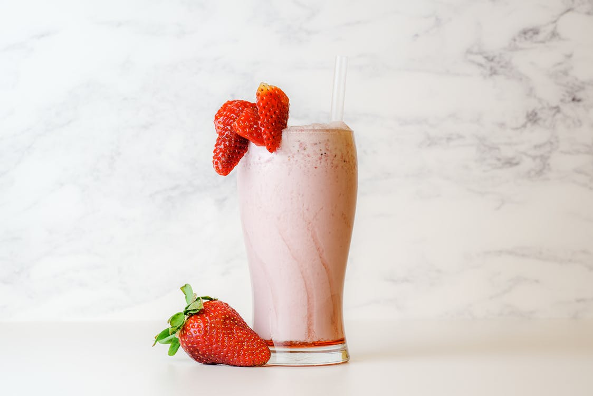

A milkshake, or simply shake, is a drink that is traditionally made by blending cow's milk, ice cream, and flavorings or sweeteners such as butterscotch, caramel sauce, chocolate syrup, fruit syrup, or whole fruit into a thick, sweet, cold mixture.
 CloseElevate the classic pancake with our Lemon-Sour Cream Pancakes recipe. The richness of the sour cream plays perfectly against the subtle acid of the lemon. Top with blueberries for an extra fruity kick.
X